This manual describes the separate runnable software deliverable inside Software_System.zip. The website itself is static and needs only a browser.
System Requirements
Requirements
Windows machine or compatible local Python environment.
Python 3 with virtual environment support.
Web browser for the local Flask application.
No external database setup required.
Dependencies
Installed from requirements.txt
The runnable product installs its Python dependencies from requirements.txt. The package includes Flask, pandas, scikit-learn, numpy, joblib, and related local application dependencies.
Simple Start
Run the Software
After downloading Software_System.zip, extract it first. Open a terminal inside the extracted
Software_System folder.
First try:
python app.py
Then open:http://127.0.0.1:5000 in the browser.
Git Bash Backup
If Dependencies Are Missing
If python app.py does not work in Git Bash because dependencies are missing, create a virtual environment
and install the required packages:
If PowerShell blocks the virtual-environment activation command, run the following command in the same terminal session:
Set-ExecutionPolicy -Scope Process -ExecutionPolicy Bypass
Then activate the virtual environment again and run python app.py.
Inputs and Steps
Required Inputs
The user can select an existing processed ICU case from the case library or enter a manual case with available demographic, admission, vital-sign, and laboratory fields. Missing values are handled by the preprocessing/model pipeline.
Automatic Steps
Load processed features and align the model input schema.
Apply imputation and preprocessing.
Generate supervised ML risk probability and risk band.
Generate explanation, similar-case, cluster, anomaly, and uncertainty context.
Prepare review ticket and handoff-summary content for the review team.
Create or update workflow records and audit events.
Manual Steps
Open the review queue or add a new case.
Review AI-supported output in the context of quality review.
Set status and priority.
Add review notes and follow-up documentation.
Archive records when review work is complete.
Outputs
System Outputs
Risk probability and Low/Medium/High review-support risk band.
Confidence and uncertainty indicators.
Top model explanation signals.
Similar case context, cluster context, and anomaly context.
Review Ticket and Prepared Review Summary for the Quality & Patient Safety Review Team.
Review notes, status, priority, archive status, and audit history.
Coordinator Workflow Summary
From Prioritized Queue to Review Team Handoff
The intended user is the ICU Quality & Patient Safety Coordinator. A typical review path is:
Dashboard → Start Next Review → Review Ticket → Case Safety Profile if needed → Coordinator Notes → Checklist → Prepared Review Summary → Ready for Quality Team Review → Reviewed / Needs Follow-up → Archive after Reviewed.
The coordinator uses this flow to turn prioritized, de-identified ICU stay evidence into a structured Review Ticket and handoff summary for the Quality & Patient Safety Review Team.
Interface Walkthrough
Screenshots
The screenshots below walk through the coordinator-facing pages of the runnable Software_System application, grouped by page.
Interface Walkthrough
Dashboard
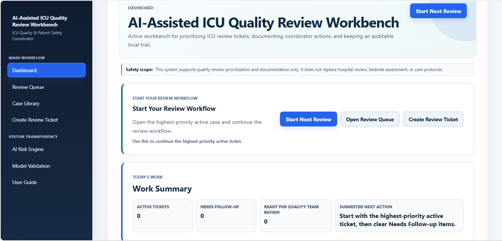
The Dashboard is the entry point for coordinators. The Safety scope banner reinforces that this tool supports prioritization and documentation only. Use "Start Next Review" to jump directly to the highest-priority active ticket.
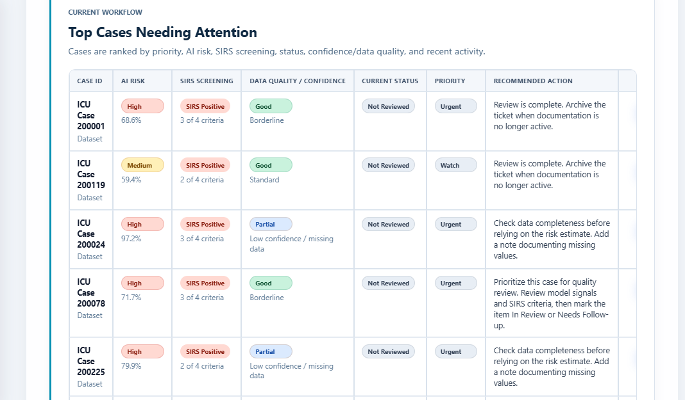
Cases are ranked by AI risk tier, SIRS screening result, data quality, and recommended action - giving the coordinator a clear starting point for review, not just a raw score.
Interface Walkthrough
Review Queue
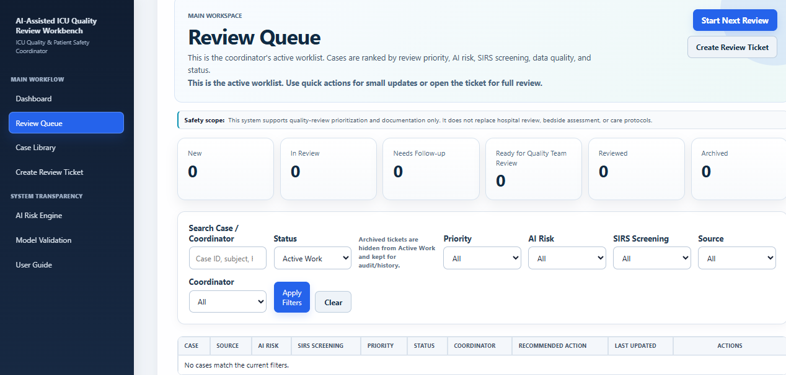
The Review Queue is the coordinator's active worklist: cases ranked by review priority, AI risk, SIRS screening, data quality, and status, with filters to narrow the list.
Interface Walkthrough
Case Library
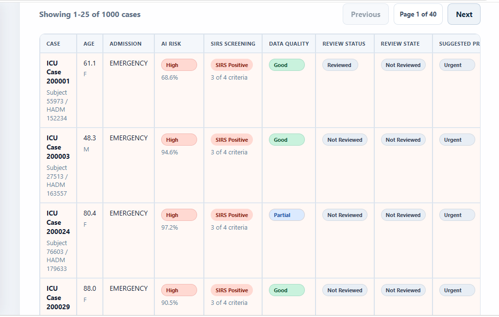
The processed case list (1000 cases total) shows AI risk, SIRS screening result, and data quality for each case at a glance.
Interface Walkthrough
Case Safety Profile
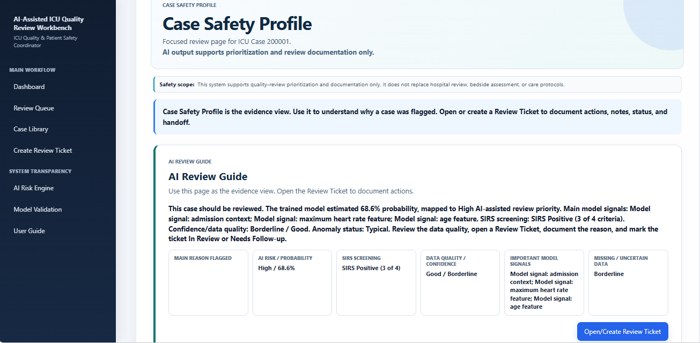
Opening a case shows an AI Review Guide summarizing why it was flagged: risk level, SIRS screening, data quality, and the key model signals, in plain language.
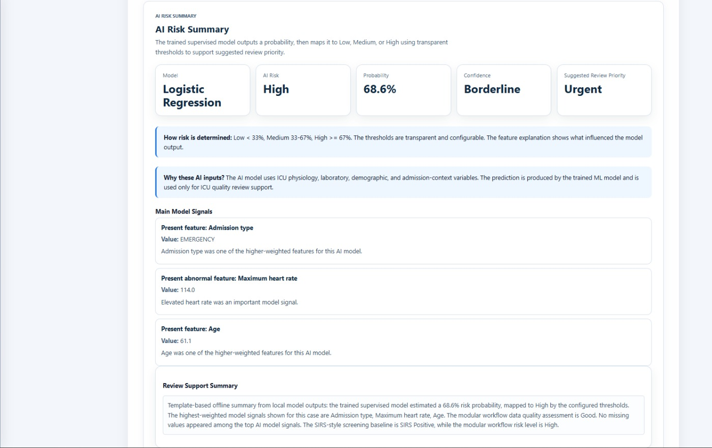
The AI Risk Summary breaks down the model, predicted probability, confidence, and the top model signals driving the suggested review priority.
Interface Walkthrough
Create Review Ticket
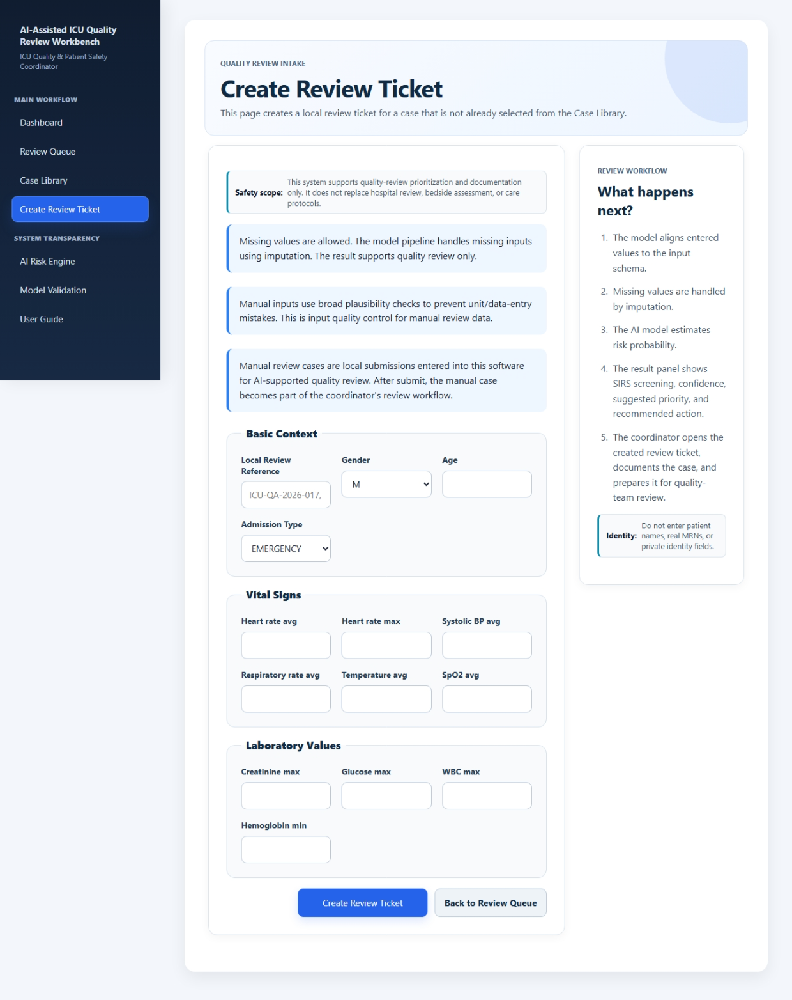
Coordinators can create a local review ticket for a case not already in the Case Library, with built-in validation and a step-by-step explanation of what happens after submission.
Interface Walkthrough
Review Ticket
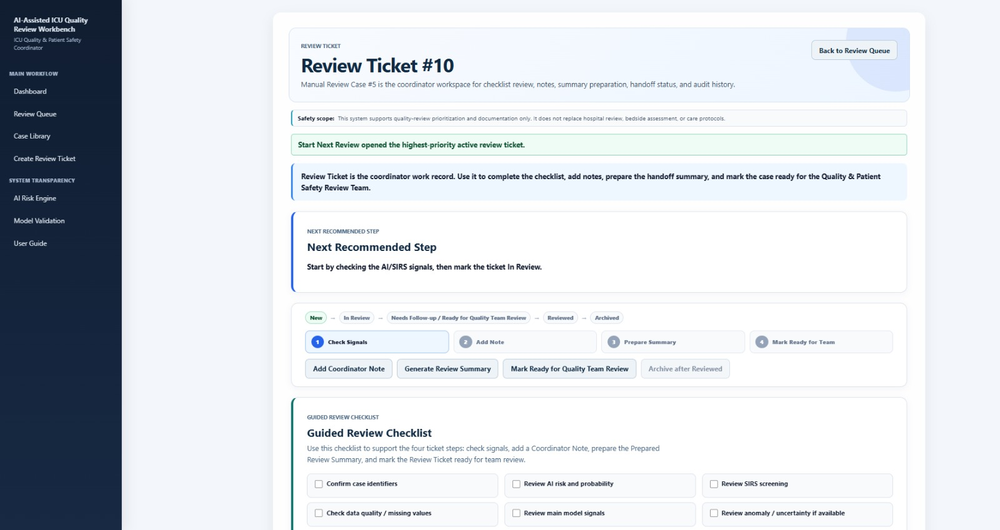
Each Review Ticket walks the coordinator through four steps - Check Signals, Add Note, Prepare Summary, Mark Ready for Team - with a guided checklist to support consistent review.
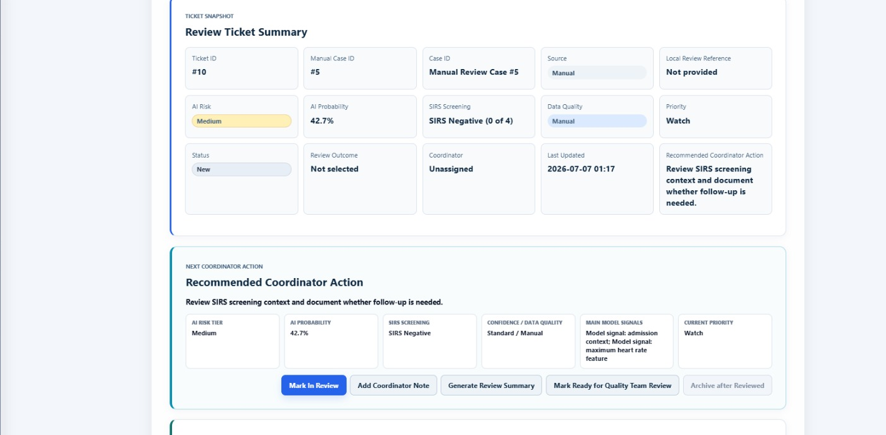
The Review Ticket Summary gives a compact snapshot: AI risk, SIRS screening, data quality, priority, and the recommended coordinator action for this ticket.
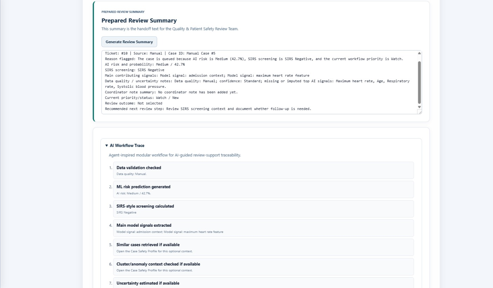
The Prepared Review Summary auto-generates the handoff text for the Quality & Patient Safety Review Team, backed by a transparent AI Workflow Trace showing each processing step.
Interface Walkthrough
Model Validation
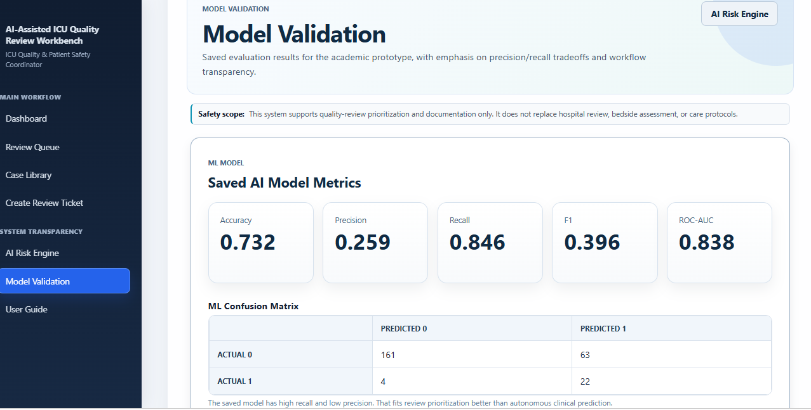
Saved evaluation metrics for the trained Logistic Regression model: accuracy, precision, recall, F1, and ROC-AUC.
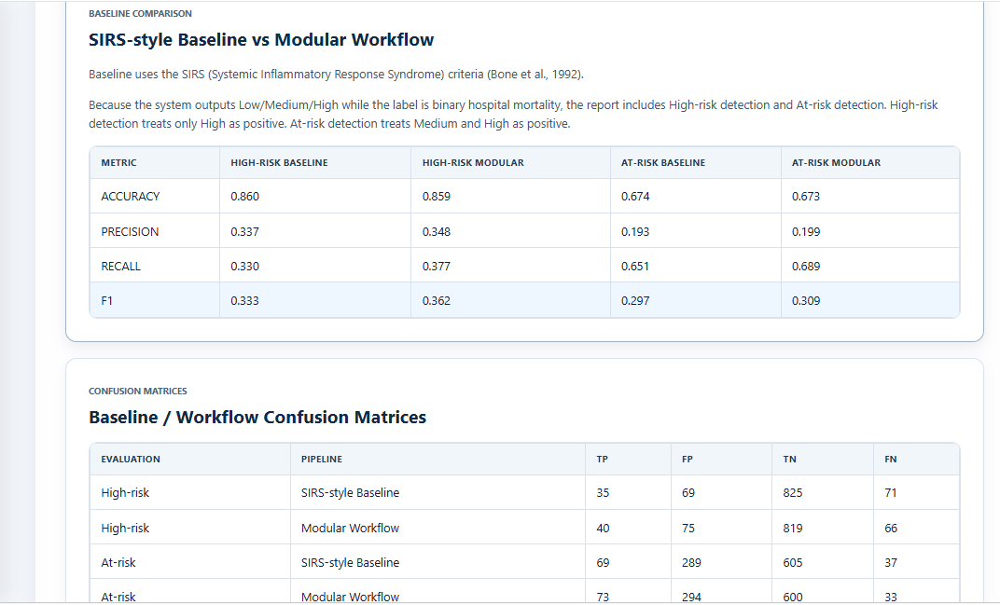
Head-to-head comparison of the SIRS-style baseline and the modular workflow across High-risk and At-risk detection, including full confusion matrices.
Interface Walkthrough
AI Risk Engine
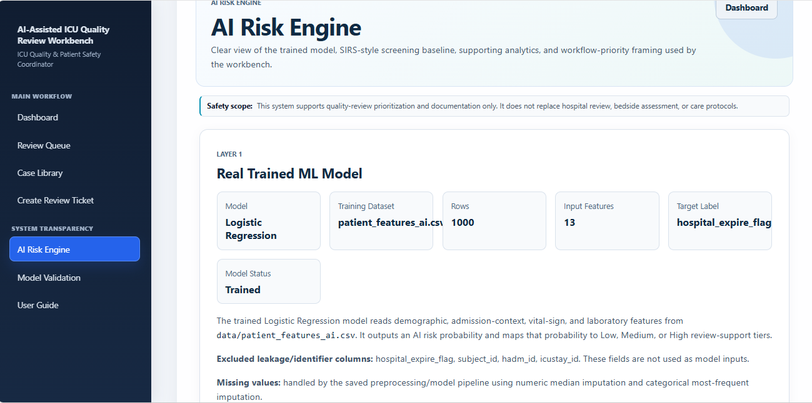
Layer 1: the real trained ML model - a Logistic Regression model trained on 1000 rows with 13 input features, targeting hospital_expire_flag.
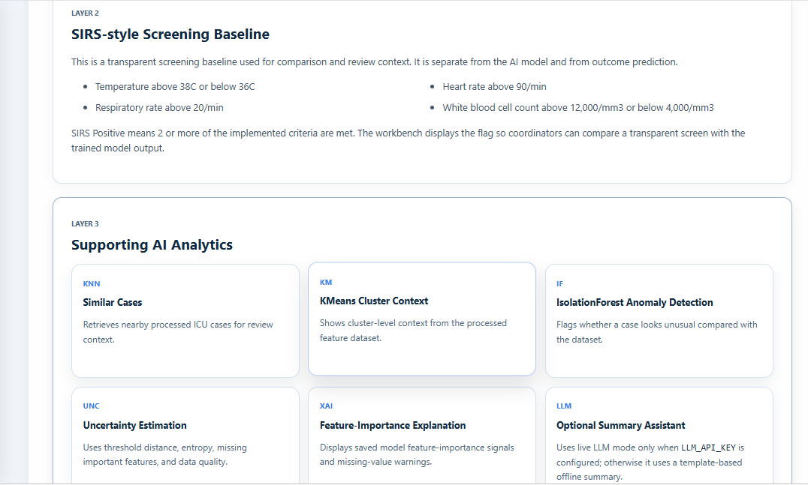
Layer 2: the SIRS-style screening baseline (Bone et al., 1992), shown separately from the trained model. Layer 3: supporting AI analytics - similar cases (KNN), cluster context (KMeans), anomaly detection (IsolationForest), uncertainty estimation, feature-importance explanation, and an optional LLM summary assistant.